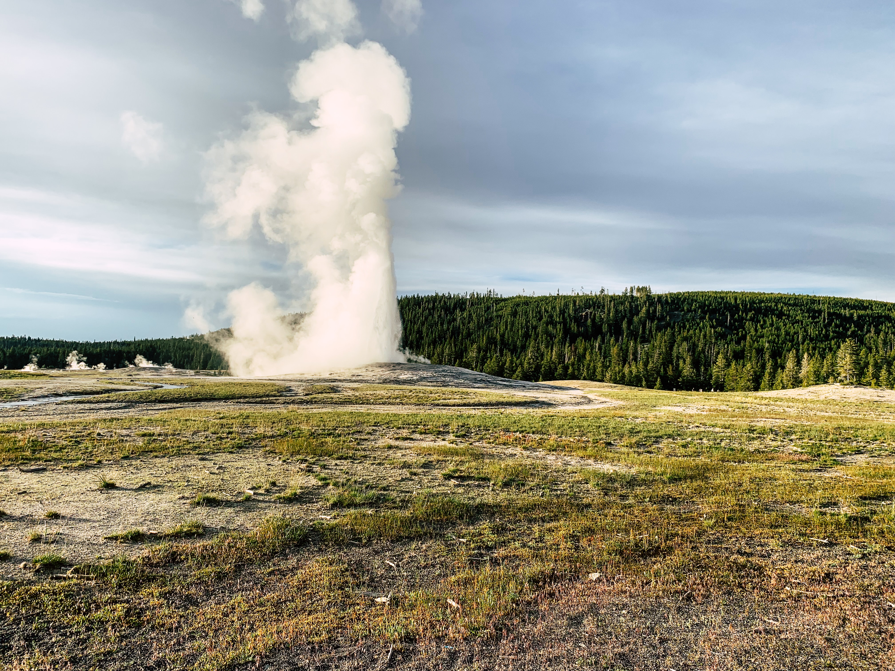
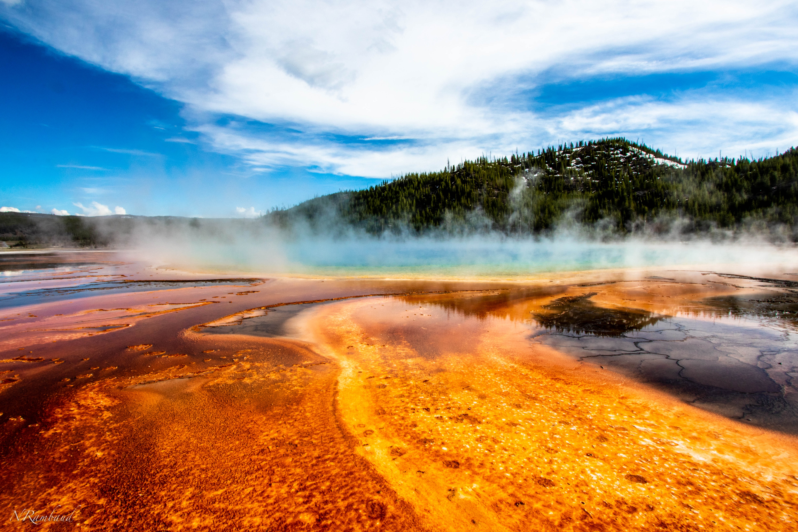

美國黃石國家公園位於美國懷俄明州，成立於1872年，是世界上第一個國家公園。佔地面積超過2,200,000英畝，包括山脈、森林、峽谷、湖泊和溪流，以及一個活躍的火山地區， 提供了令人驚嘆的自然風景和豐富的野生動植物。黃石國家公園最著名的景點之一是老忠實間歇泉。這個間歇泉每隔約90分鐘就會噴發一次，將高溫的水柱噴至約140英尺的高度。 遊客可以在指定的觀景區觀賞這一壯觀景象，並感受到熱氣蒸騰的感覺。
公園內還有許多其他引人注目的地理奇觀，如大峽谷、羚羊峽谷和黃石湖。大峽谷是一個深達1,200英尺的峽谷，其壯觀的景色令人屏息。羚羊峽谷則是一個深達800英尺的狹長峽谷，其特殊的地質特徵讓人難以忘懷。 黃石湖是美國最大的高山湖泊之一，其湖水清澈見底，被周圍壯麗的山脈和森林環繞著。 此外，黃石國家公園還是野生動物的家園。遊客可以看到大量的野生動物，包括灰熊、黑熊、野生馬、野牛和狼。公園提供多條步行和徒步旅行路線，讓遊客有機會近距離觀察這些令人驚嘆的生物。
對於喜歡戶外活動的遊客來說，黃石國家公園也是一個天堂。遊客可以在公園內進行釣魚、划船、露營、登山和騎馬等活動。公園提供多個露營地點，以及設施齊全的遊客中心和遊客服務站，方便遊客獲取相關資訊和支援。 對於愛好攝影的遊客來說，黃石國家公園是一個理想的目的地。無論是晨昏光線中的山脈、湖泊的倒影，還是野生動物的瞬間捕捉，公園提供了豐富多樣的拍攝機會。
此外，黃石國家公園還擁有豐富的歷史和文化遺產。遊客可以參觀遊客中心和博物館，了解國家公園的成立歷史和自然保育的重要性。此外，還有一些古老的原住民遺址和考古遺跡，提供了對當地文化的深入了解。 為了保護這片寶貴的自然環境，遊客需要遵守公園的規定和指引。這包括不觸摸或騷擾野生動物，不違反火災安全規定，並將垃圾帶出公園。保持公園的清潔和原始是每位遊客的責任。
對於喜歡戶外活動的遊客來說，黃石國家公園也是一個天堂。遊客可以在公園內進行釣魚、划船、露營、登山和騎馬等活動。公園提供多個露營地點，以及設施齊全的遊客中心和遊客服務站，方便遊客獲取相關資訊和支援。
對於愛好攝影的遊客來說，黃石國家公園是一個理想的目的地。無論是晨昏光線中的山脈、湖泊的倒影，還是野生動物的瞬間捕捉，公園提供了豐富多樣的拍攝機會。
總結來說，美國黃石國家公園是一個令人驚嘆的自然寶藏，提供了壯麗的景觀、豐富的野生動植物和多樣的戶外活動。 無論是對於愛好自然的遊客還是攝影愛好者來說，這裡都是一個不可錯過的旅遊目的地。踏入黃石國家公園，您將被自然的奇觀和美景所震撼，並留下難忘的回憶。